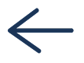
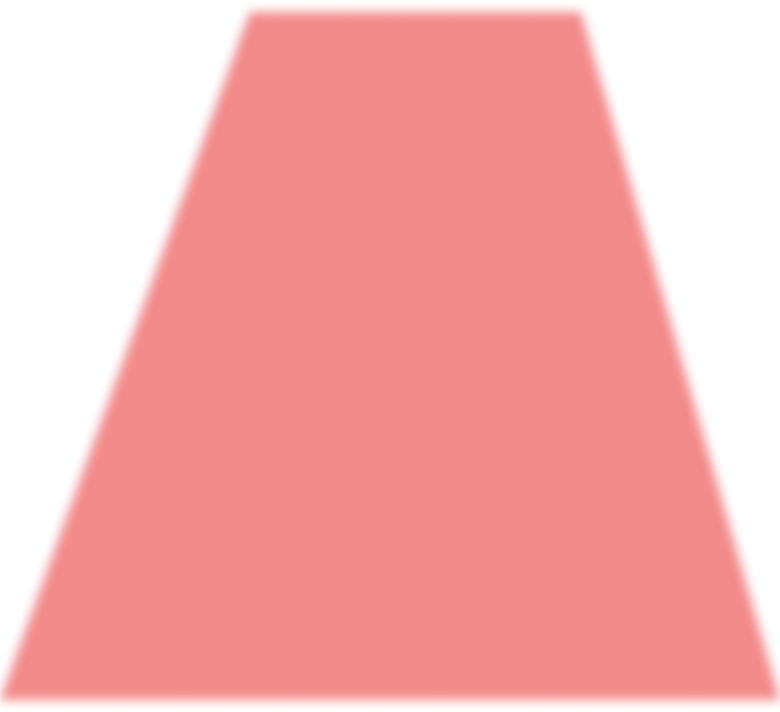

Start Scan
Tap anywhere to start scanning
Tap anywhere to continue
Scanning environment…
Tap to skip

Accessible Route
Detected
Detected
Tap to start guidance

Route Not
Accessible
Accessible
Tap to rescan
Guidance
Tap to end